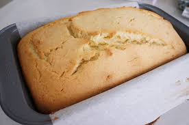
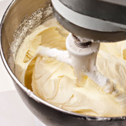
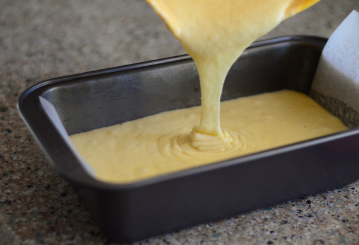

Overview
 Pound cake refers to a type of cake traditionally made with a pound of each of four ingredients: flour, butter, eggs, and sugar. However, any cake made with a 1:1:1:1 ratio, by weight, of flour, butter, eggs, and sugar may also be called a pound cake, as it yields the same results.
Recipe

- 1 and 2/3 cups cake flour
- 1/2 teaspoon salt
- 1 cup unsalted butter
- 1 and 1/2 cup granulated sugar
- 5 large eggs
- 1 and 1/2 teaspoon vanilla extract
- 1 teaspoon grated lemon zest (optional)
Direction

- Set oven rack to center position and preheat to 325 degrees f.
- Grease a standard 9x5x3 metal loaf pan with crisco or softened butter-- dust with flour.
- Sift flour and salt into a medium bowl and set aside.
- Place butter in your mixing bowl and beat until smooth, creamy and light colored-- 30 seconds on a stand mixer, 60 seconds by hand.
- Gradually add sugar and beat until butter is very white and fluffy.About 3 minutes on your stand mixer, 5 mins by hand.
- Add the whole eggs, one at a time and beat for 20 seconds after each addition.
- If it appears grainy and/or curdled then the temperature is probably too cold for the eggs to combine properly with the butter.Allow it to warm then rebeat for a few seconds
- Add vanilla extract and beat for a few more seconds.
- Sift the flour in three equal parts into the butter/sugar/egg mixture, folding gently into the after each addition until all the flour has been incorporated and the batter is well mixed.
- Pour batter into prepared pan and bake for 70 minutes, rotating 180 degrees halfway thru the baking process.
- Cool on rack for 5 minutes before removing from pan.